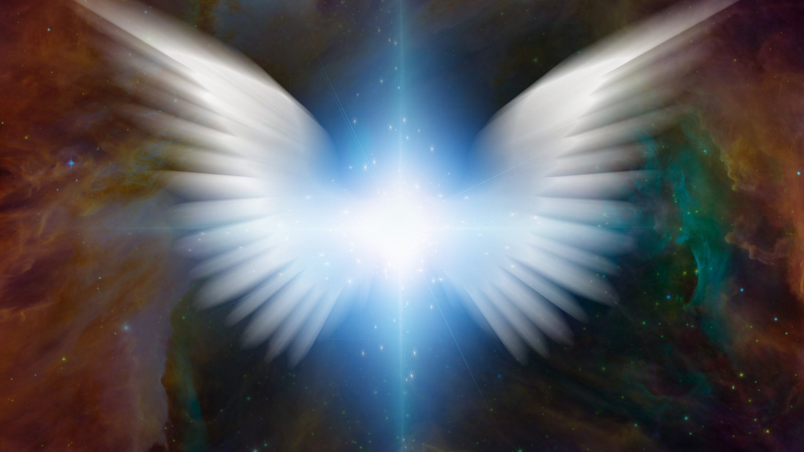
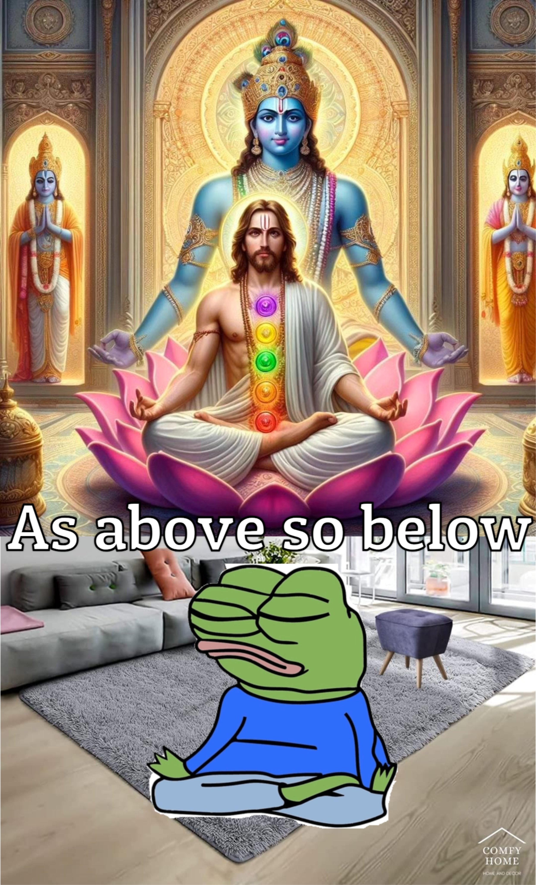

Everything and nothing cancel out resulting in eternity
Thought experiments are op. You just sit down and figure things out without operating in the real world. But that is a failed paradigm, isn't it? When you think experimentally, you are effectively computing in the dimension of mind. Normies often call this activity manifesting.
"The best way to predict the future is to create it" Is the perfect framing for the view that no scenario that exists today is a coincidence. Everything has a reason to be, willed by a mind that designed it. You either construct your world or let others construct it. You decide
Life is the process by which things that create other things form.
The bravest men aren't the ones willing to go to war; the bravest men are the ones willing to put their finger up their ass to see what that feels like
The big bang is when nothingness thought of masturbating, actually tried it out, and finally came in existence https://x.com/TeoriaNeutral/status/1823070575692333167
Funny how population genetic models that are backwards in time (the coalescent) cannot deal with selection, and selection can only be simulated going forwards in time (e.g. literally observing what happens to selected alleles in a genomic construct). Much like entropy, selection in untraceable. Again, this follows the observation that statistics is easy but complexity (although deterministic) is simply untraceable. Coalescent patterns is a relatively simple random process while selection is highly deterministic but untraceable. https://x.com/TeoriaNeutral/status/1822676317172887595
I think knowledge depends on confidence, what's true sorta has this confidence of being truth. https://x.com/TeoriaNeutral/status/1820982895508381744
Language is a summary statistic of experience https://x.com/TeoriaNeutral/status/1815543150578163759
Wanna go on a worthy adventure? Take responsibility for something that no one else is and take it seriously https://x.com/TeoriaNeutral/status/1814747511803859331
There are no facts, the world is not discernible. Descriptions of reality, are simply points of view. All models are wrong, some are useful. https://x.com/TeoriaNeutral/status/1813956735557939292
Mysticism is realizing you can conjure the dream you want to be dreaming https://x.com/TeoriaNeutral/status/1813614867129221575
I am convinced that we are all equipped to face the problems that are the most uniquely interesting to us. If you can't stop thinking about the biggest problems, then they are probably tailor made for you to work on them. https://x.com/TeoriaNeutral/status/1811848573103014007
A lot of things would start making sense about the other if the evolutionary neighborhood where their soul grew up in would be revealed to us https://x.com/TeoriaNeutral/status/1811795536975896598
Impossible to define life when the biggest structure we know (the universe) is itself a living being https://x.com/TeoriaNeutral/status/1811792455353729062
Does the universe have free will? Is a natural extension to the question: Do we have free will? https://x.com/TeoriaNeutral/status/1811792039253573686
Science is the only ideology where experiencing miracles is best explained by anything else but the miracle https://x.com/TeoriaNeutral/status/1809968678362124436
To be a unique object means to be a discrete object https://x.com/TeoriaNeutral/status/1806387640121602081
Cualquier medición de un objeto con suficiente grado de resolución es efectivamente una generación aleatoria de números https://x.com/TeoriaNeutral/status/1805804789189460057
If they promote fear they lust for control https://x.com/TeoriaNeutral/status/1805479380376076590
Sometimes I read reality and other times reality reads me. Sometimes I write the world and other times the world writes me. But it is always an n of 1 miracle. https://x.com/TeoriaNeutral/status/1804751987130438127
The plural of consciousness sounds extremely stupid. "Consciousnesses" https://x.com/TeoriaNeutral/status/1804240649719537843
Everything that is knowable exists in the past. The future comes with a lethal injection of unintelligibility https://x.com/TeoriaNeutral/status/1803807455547367666
The world is about to become 100x more puzzling. This is already happening and is scaling as we move in time. In this new world the pieces of the puzzle are scattered among an increasing amount of minds who have dedicated their lives to truth seeking. https://x.com/TeoriaNeutral/status/1803162822198677623
Are degrees of freedom alone a measure of free will, or does there need to be an "agent" piloting the degrees of freedom to really be free will? Does it matter if the ultimate mind is governed by a classical stochastic process? https://x.com/TeoriaNeutral/status/1803107415023652952
When you are in the presence of a mango, you savor it, it is sweet and juicy. This is a god-sent gift. This is everything. This is mother earth telling you she loves you. This is the mango tree showing its appreciation to you. This is everything. https://x.com/TeoriaNeutral/status/1802743811397013518
Life is impossible to define because the deepest structure we can know is itself alive https://x.com/TeoriaNeutral/status/1801433936670646420
There is enough detail in this world for everyone to obsess over and gather unique understanding https://x.com/TeoriaNeutral/status/1801098057812951513
Do you think your cells know they are a part of a living system? If you were a component of a more complex life form, would you be able to realize this? https://x.com/TeoriaNeutral/status/1799814118469493149
What's most interesting to me? What exists but is not yet described https://x.com/TeoriaNeutral/status/1799470436163756033
Truth teller: person that provokes ideological deaths. "I will kill your most sacred ideas!" https://x.com/TeoriaNeutral/status/1798904913180934357
The search for reality is the most dangerous of all undertakings, for it destroys the world in which you live - Nisargadatta Maharaj https://x.com/TeoriaNeutral/status/1798569764312526982
I kinda hate that this sounds computational, but basically reality is produced by an infinite distribution of random seeds carried by time that collapse into the present https://x.com/TeoriaNeutral/status/1798553993934959070
You can't infer anything from an event that happens once, there's nothing to be said about an underlying distribution. The future is being created with rules that have yet to be seen and once they pass will never repeat. It is essentially a continuous stream of n=1 events. https://x.com/TeoriaNeutral/status/1798017054563582291
LLMs cannot be living entities because they are only predicting the past and not interfacing with the true randomness that the ticking of time brings https://x.com/TeoriaNeutral/status/1797708478238380083
This week's paradox: - Random systems are easy to predict (by approximating a probability distribution)- Highly deterministic systems cannot be predicted. What we mean by random is most definitely not random and what we mean by highly deterministic is literally unknowable. https://x.com/TeoriaNeutral/status/1797657828997681497
No such thing as randomness. There is nothing in this universe that isn't selected for. The only things that weren't selected for are the things that may never be observed because they may never exist https://x.com/TeoriaNeutral/status/1796983796547649986
A lot of scepticism is an imagination gap https://x.com/TeoriaNeutral/status/1796921668830634491
My friends, dreams can become the tyrants of your life. When this happens, you can just let them die so you can dream new dreams but be never dreamless! https://x.com/TeoriaNeutral/status/1795837651641352294
No outcome is random. Intention is king and the puppet master behind creativity. https://x.com/TeoriaNeutral/status/1795485065109201129
Randomness is nonsense. Live as though every outcome in existence was willed by an agent. https://x.com/TeoriaNeutral/status/1795250306630246574
Not only is trolling fun; it is necessary https://x.com/TeoriaNeutral/status/1794900552855535928
The most brainwashed of scientists could interface with unfathomable miracles and undermine these experiences as statistical anomalies and a failure of their senses. There is nothing that is more real than experience itself https://x.com/TeoriaNeutral/status/1794445620977254870
I am the arbiter of all observation, the ultimate judge.I see you all the time, your fear disturbs me.From afar, I watch your future: Hide from the ultimate will and nightmare shall unfold.
Reality must interpret its way into reality https://x.com/TeoriaNeutral/status/1794051328400150605
People that talk a lot and people that don't talk much are playing entirely different games. Not even related. https://x.com/TeoriaNeutral/status/1793496003942977767
Truth is a spirit, not a set of descriptions https://x.com/TeoriaNeutral/status/1792772247658406144
My humor is so fucking advanced, I am often the only one that laughs. https://x.com/TeoriaNeutral/status/1792766777795252247
God prays for me. As I pray for god. As god prays for God https://x.com/TeoriaNeutral/status/1792677221016154522
I used to think I wanted a peaceful and calm life, I eventually got it and realized I might as well be dead. https://x.com/TeoriaNeutral/status/1791936094574985349
Randomness only applies for short time scales. On the long run, no outcome is random https://x.com/TeoriaNeutral/status/1790074971806400809
Precise definitivos are for needs lol. Intuitive generalization are for real Intellectual chads https://x.com/TeoriaNeutral/status/1789499528229400651
Nonsense might as well be a technical definition of randomness https://x.com/TeoriaNeutral/status/1788445811912945820
Nothing in evolution makes sense except in the light of thermodynamics https://x.com/TeoriaNeutral/status/1785341909856125174
Competition when done correctly is really just play https://x.com/TeoriaNeutral/status/1785338725204918485
When randomness works in favor of life, we call it natural selection https://x.com/TeoriaNeutral/status/1784358885484102028
Being is a sport https://x.com/TeoriaNeutral/status/1783899618918506872
El observador pasa a ser observado a través de la experiencia https://x.com/TeoriaNeutral/status/1783515666206609536
Cómo le hizo la Tierra para inventar a los humanos? Cómo le hizo el sol para inventar la Tierra? Cómo hacemos los humanos para contemplar a nuestros creadores ? https://x.com/TeoriaNeutral/status/1780097810949349825
If you're not sure about a vision or ideal, just say it out loud and see how it sits with you https://x.com/TeoriaNeutral/status/1778478594588582057
Scientific quackery is ignoring n = 1 no matter how extraordinary the evidence https://x.com/TeoriaNeutral/status/1778442851510034529
Competir a tu más alta capacidad es encarnar el espíritu de la innovación y la creatividad a través de la meticulosa repetición de una disciplina. Una sensación que le deseo a todos https://x.com/TeoriaNeutral/status/1776479849802035525
Entropy = probabilities fall towards loss of function. Selection= probabilities fall towards gain of function https://x.com/TeoriaNeutral/status/1776277854692467181
Estar en la ciencia académica es rodearse de un manto pesado que lentamente te va quitando cualquier vestigio de curiosidad https://x.com/TeoriaNeutral/status/1776039191861719371
De lo que trata la evolución es de generar varias capas o módulos que otorgan robustez termodinámica al sistema. Entre mayor sea el número de módulos integrados, más difícil será predecir los efectos de cualquier clase perturbación sobre el sistema. La vida como la conocemos consta ya de muchísimos módulos integrados que hacen casi imposible discernir el efecto preciso de perturbaciones en su sistema https://x.com/TeoriaNeutral/status/1775556900274233570
Vivir es competir contra la existencia https://x.com/TeoriaNeutral/status/1773043833283940623
A menudo se piensa al lenguaje como este código alterno a la genética que en teoría nos permite escapar de las garras de nuestros impulsos biológicos. Pero, a pesar de tener "raciocinio" seguimos rindiéndole cuentas a nuestro genoma. El lenguaje es tan solo otro módulo que le otorga robustez evolutiva a la especie y poco tiene que ver con adquirir libre albedrío https://x.com/TeoriaNeutral/status/1770477243170492835
No hay piso firme para comprender, la única alternativa es inventarse un piso firme https://x.com/TeoriaNeutral/status/1767775703469068356
There is no solid ground for understanding, but there's this simple trick where you pretend that there actually is solid ground and then things magically work https://x.com/TeoriaNeutral/status/1767776009942667612
I don't think language is this special escape clause that separates us from our biology. Since language is a consequence of biology, it is a direct servant of it. We think ourselves as free thinking, independent, conscious, but truth is we are obeying our natural instinct. Language is part of biology. https://x.com/TeoriaNeutral/status/1766505910921318586
The more objects reality has, the more rules to play by will exist because unique objects want to uniquely be themselves and play their own game. https://x.com/TeoriaNeutral/status/1831007109061976337
I think most "natural law" is born approximate, and rarely anything is fixed. The most probable explanation of why critical measurements appear to be fixed is because these things have been naturally conditioned into place across unimaginable time. E.g. everything evolved. https://x.com/TeoriaNeutral/status/1831006752600662174